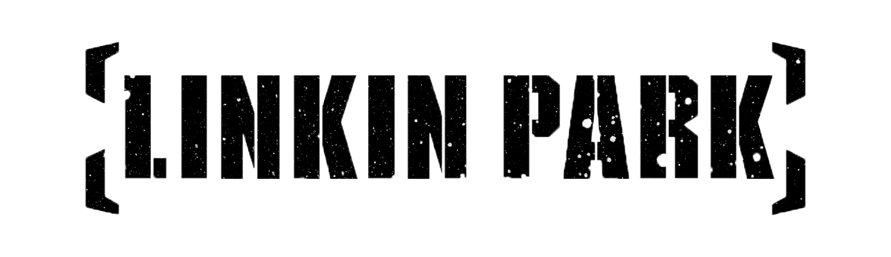

Un breve resumen de su origen, incluyendo su discografia, historia y redes sociales
Linkin Park son una de las bandas más populares del llamado movimiento nü-metal, junto con Limp Bizkit, Korn y varios otros. Su sonido tiene una amplia gama de influencias, incluyendo el metal, el rock alternativo, el hip-hop, la electrónica y la industria. El álbum de debut de Linkin Park se tituló Hybrid Theory, el cual se convirtió en un éxito multiplatino en todo el mundo, vendiendo más de 13 millones de copias, 8 millones de ellas sólo en los Estados Unidos. El nombre proviene de un juego de palabras que hace referencia al Lincoln Park en Santa Mónica.